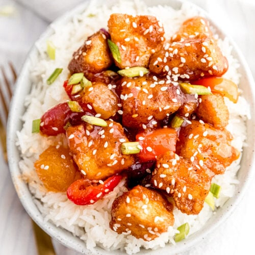

Sweet and Sour Tofu

The Best Sweet and Sour Tofu
This is a simple, quick, and healthy recipe for a vegan meal.
Ingredients:
- 1 block of extra frim tofu
- 1 tbsp vegan butter or vegetable oil
- 4 cloves garlic
- 2 tbsp gochujang
- 2 tbsp maple syrup
- 1 cup chopped vegetables
- 2 cups rice (rinsed)
- 1 tbsp rice vinegar
- 1 tbsp sugar
- 1 tsp salt
- 0.5 cups soy sauce
Steps:
- Start rice in a rice cooker
- Preheat a non-stick pan on medium-high heat
- Chop tofu into 0.5 inch cubes
- Finely chop garlic and add to pan with butter or oil
- Once garlic is roasted, add maple syrup, gochujang, and soy sauce. Stire to combine
- Add tofu to pan and gently mix until they are well-coated
- Add vegetables to pan and gently stir
- Cook until mixture in pan is reduced and sticky (about ten minutes)
- Add rice vinegar, salt, and sugar to rice once finished
- Add to a bowl and enjoy!
Take yourself back to the recipes page by clicking here